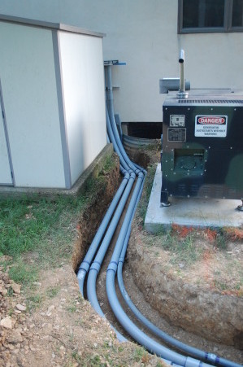
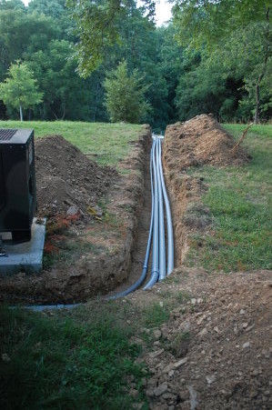
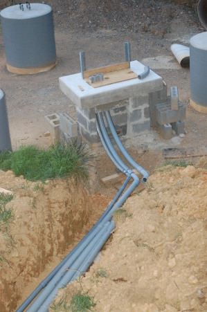

|
Home About VSI What We Do Who We Are Contact Info Resources Blog Data Archives Export |
Tower ConstructionConduit and Cabinets
The tower wiring consists of one 120VAC utility circuit, for the WISP WiFi equipment, and multiple conduit and
control cables. The initial plan calls for a total of nine such signal and control cables; two LMR-600 and one
RG-11 coaxial cable, one 12VDC six conductor control cable for the remote antenna switch, one 24VDC eight
conductor control cable for the antenna rotator, and four Ethernet Cat5E cables.
An electrical cabinet mounted on the house wall will be connected to a cabinet at the base of the tower by four runs of PVC conduit: one 1-1/4" conduit run for the 120VAC power, and three 2-1/2" conduit runs for the signal and control cables. Initially only two of those three will be used, with one as a spare. Buried Conduit   Wall Cabinet |
|
|